09:00 KST / Lookbook 01 / Released
너의 집이 아트로 명품이 되는 순간
평범한 렌탈 아파트, 작은 소파, 콘센트, 토트백, 신발장까지 그대로 둔다. ELURA는 그 현실적인 생활 단서를 아트 배치와 편집으로 묶어 “내 집도 이렇게 달라질 수 있다”는 기대감을 만든다.

Reference Grammar / not affiliated, no brand assets used
레퍼런스는 명품 주택이 아니라 편집 문법이다
art de vivre as room taxonomy
Dior Maison은 홈을 tableware, textile, decor, objects로 나누면서도 생활 미학으로 묶는다. 여기서는 비싼 집을 따라 하지 않고, 사용자의 실제 방을 팔레트, 직물, 오브제, 조도의 체계로 읽는다.
Sourceprivate appointment, coded address
31 Cambon의 힘은 주소, 서비스, 보존, 개인 응대가 하나의 세계로 느껴지는 데 있다. ELURA는 그 태도를 작은 현관, 거울, 열쇠 트레이 같은 실제 집 단서에 적용한다.
Sourcefunctional object becomes collectible story
Objets Nomades는 기능적인 오브제를 장인성, 디자이너, 이동성의 이야기로 올린다. 이 룩북에서는 액자 하나도 평범한 책상과 현관의 행동을 바꾸는 오브제로 다룬다.
Sourcelarge-format gaze and critical essay
Fashion Eye의 핵심은 장소를 한 사진가의 시선과 에세이로 재편집하는 방식이다. 집도 동일하게, 여러 방을 하나의 시선으로 재배열하면 단순 인테리어가 아니라 공간 에세이가 된다.
SourceReference URLs Used
https://www.dior.com/en_us/fashion/maison/maison https://www.chanel.com/us/about-chanel/inside-chanel/ https://www.chanel.com/us/fashion/services/boutique-31-cambon/ https://us.louisvuitton.com/eng-us/magazine/articles/the-objets-nomades-collection https://us.louisvuitton.com/eng-us/trunks-travel-and-home/library-and-stationery/fashion-eye/_/N-tiayzr9Spatial Essay
이 집의 명품감은 집값이 아니라 정리된 시선에서 온다

사용자는 “내 방은 너무 평범한데 가능할까요?”라고 묻는다. 답은 방을 비싼 것처럼 속이는 데 있지 않다. 콘센트, 충전 케이블, 작은 책상, 신발장 같은 현실적인 단서를 남긴 채, 한 점의 아트가 시선을 어디에 멈추게 하는지 보여주는 데 있다.
첫 번째 룩북은 고급 주택을 복제하지 않는다. living, work-dining, bedroom, entry를 실제 집의 스케일로 펼치고, 각 공간에서 아트가 맡는 역할을 “구매 전 기대감”으로 번역한다.
흰 벽을 숨기지 않고, 액자 하나로 선택된 면처럼 보이게 한다.
충전 케이블, 머그, 토트백이 남아 있어 실제 집에서도 가능한 변화로 보인다.
책, 열쇠, 수건이 남아 있어 사용자의 집이라는 증거가 된다.
Room Plates
네 공간, 네 개의 아트 역할
Living / expectation
the same sofa now looks intentional.
TV, 충전 케이블, 토트백은 그대로 두고 큰 아트가 “정리된 집”의 첫인상을 만든다.
Desk-Dining / upgrade
your work table becomes a designed corner.
노트북, 머그, 콘센트가 있는 실제 책상도 아트가 들어가면 룩북의 한 장면이 된다.

Bedroom / proof
a normal bedroom can still feel collected.
옷걸이와 빨래 바구니가 보여도, 아트가 침대 위의 시선을 하나로 묶는다.

Entry / first touch
the shoe rack becomes the house code.
신발, 열쇠, 우산, 토트백이 있는 좁은 현관도 작은 아트 하나로 첫 장면이 된다.
Zine Page / detachable
Do not erase the real home.
명품감은 집을 비워서 생기는 것이 아니다. 콘센트, 신발장, 옷걸이, 머그컵, 충전 케이블이 남아 있을 때 사용자는 “내 집도 가능하다”고 느낀다. ELURA는 그 현실감을 아트가 들어갈 자리의 증거로 바꾼다.
10:00 KST / Spatial Essay 02 / Released
Apartment Code: Mirror, Keys, Outlet
Chanel의 31 Cambon과 Inside Chanel에서 가져온 것은 특정 상징이 아니라, 반복되는 물건이 하우스 코드가 되는 방식이다. 이 페이지는 사용자의 좁은 현관, 거울, 열쇠 트레이, 콘센트를 개인 코드로 명명한다.

the first square meter becomes the first chapter.
좁은 현관을 숨기지 않는다. 신발장 위 작은 아트가 집의 첫인상을 정리한다.
reflection proves the change is real.
거울은 “넓어 보이게 하는 장치”가 아니라, 작은 집에도 아트가 실제로 놓였다는 증거가 된다.
ordinary objects make the luxury believable.
노트북, 머그, 콘센트가 보일수록 “내 집도 이렇게 될 수 있다”는 기대가 강해진다.


11:00 KST / Zine 03 / Released
Move the Frame, Not the House
Louis Vuitton Objets Nomades에서 빌린 문법은 비싼 오브제를 흉내 내는 것이 아니라, 하나의 물건이 사용자의 행동을 바꾸는 방식이다. ELURA는 작은 집에서도 액자 위치를 이동하며 “어디에 걸면 내 집이 가장 명품처럼 보이는지”를 실험하게 한다.
change the focal point first.
소파, TV, 러그를 바꾸지 않아도 된다. 먼저 시선이 멈추는 벽을 정하고 아트가 방의 첫인상을 바꾸는지 본다.
mug, laptop, tote, work.
아트는 현실 물건을 지우지 않는다. 머그, 노트북, 토트백이 옆에 있을 때 변화가 더 믿을 만해진다.
one artwork creates three possible homes.
거실, 책상, 현관 중 어디에 두느냐에 따라 같은 집이 다른 수준의 기대감을 만든다.


12:00 KST / Lookbook 04 / Released
Art de Vivre for a Real Desk
Dior Maison에서 참고한 것은 테이블웨어 자체가 아니라, 생활의 물건을 하나의 art de vivre 체계로 정리하는 문법이다. 이 페이지는 식탁 겸 책상, 머그, 노트북, 콘센트, 벽의 아트를 한 의식으로 묶어 사용자의 실제 집을 작은 메종처럼 읽는다.

the work table becomes the luxury surface.
노트북과 머그가 있는 실제 책상을 숨기지 않는다. 아트가 들어오면 그 표면이 일상과 취향이 만나는 자리로 읽힌다.
a small lamp can sell the wall.
저렴한 조명도 충분하다. 빛이 벽과 프레임을 잡아주면 방은 갑자기 촬영된 장면처럼 보인다.
the artwork makes the ordinary believable.
콘센트와 의자가 보이기 때문에 기대감이 커진다. 사용자는 “이건 내 집에도 된다”고 느낀다.
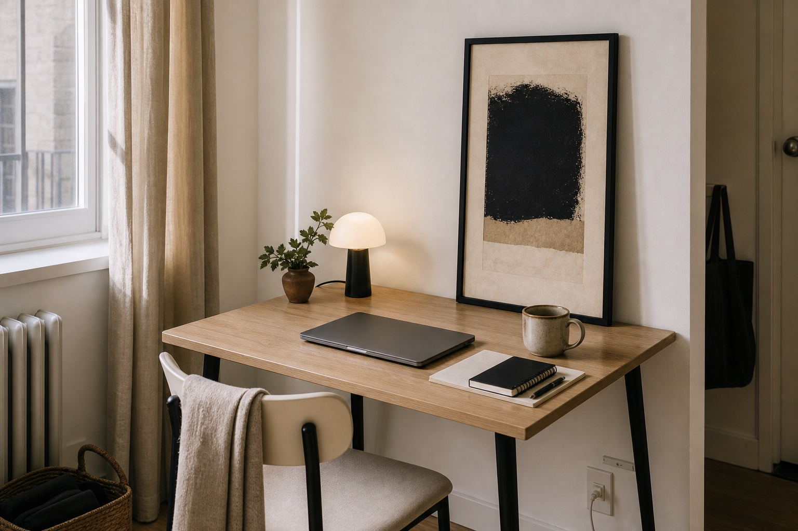
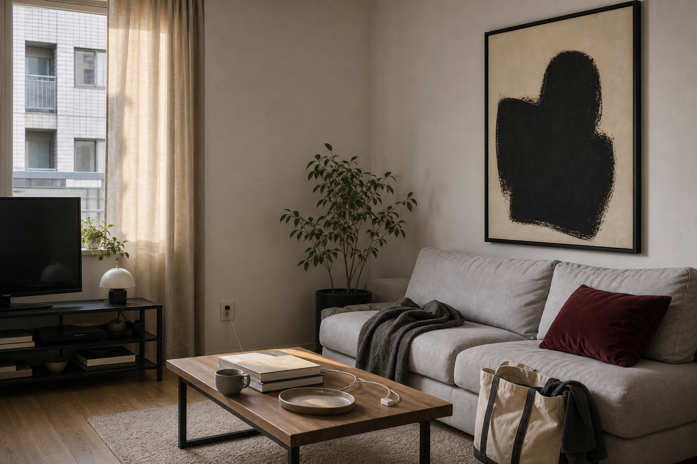
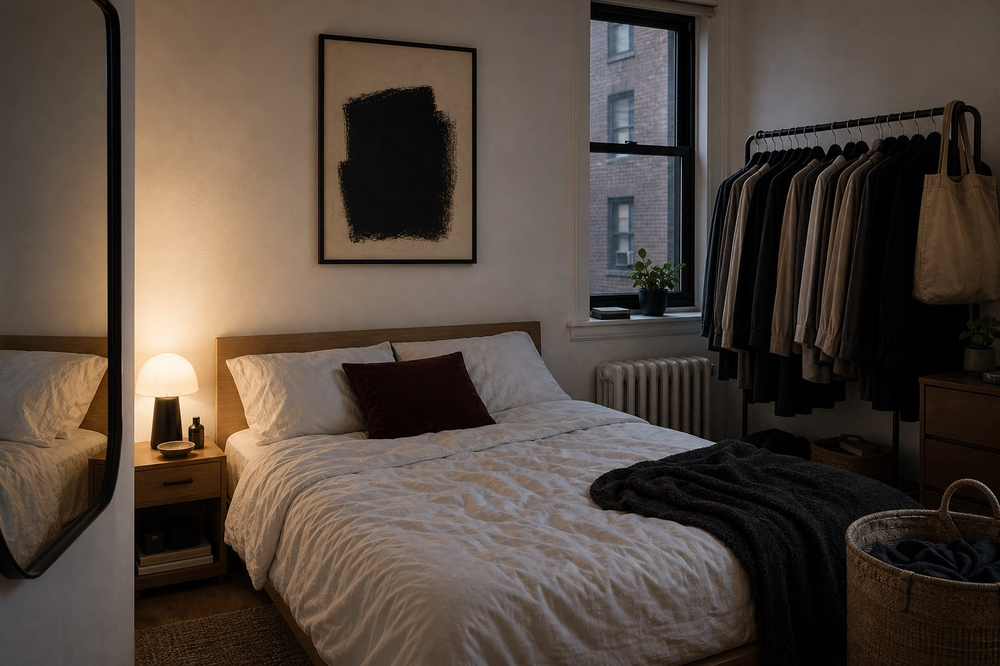
13:00 KST / Storybook 05 / Released
Small Bedroom, Private Luxury
Chanel의 하우스 코드 문법을 현실적인 침실에 적용한다. 옷걸이, 빨래 바구니, 충전 케이블을 숨기지 않고, 한 점의 아트가 침대 위 벽을 개인적인 명품 방의 첫 장면으로 바꾸는 과정을 보여준다.
the rail proves this is a real room.
옷걸이가 보이면 오히려 기대감이 커진다. 사용자는 자신의 침실에서도 같은 변화가 가능하다고 느낀다.
the wall above the bed becomes the signature.
침대 프레임을 바꾸지 않아도, 아트의 크기와 위치가 방 전체의 수준을 바꾼다.
the charger cable is part of the proof.
작은 램프, 충전 케이블, 책이 남아 있어도 잘 편집하면 사적인 명품감이 생긴다.
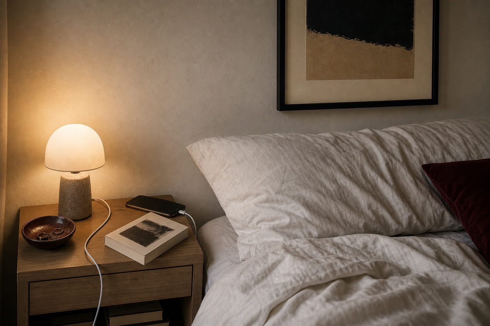
14:00 KST / Zine 06 / Released
Small Kitchen, Editorial Proof
Dior Maison의 생활 오브제 문법을 작은 렌탈 주방에 적용한다. 싱크대, 접시 건조대, 전기포트, 콘센트를 지우지 않고, 작은 아트와 크롭으로 “우리 집 주방도 명품 잡지의 한 장면이 될 수 있다”는 기대감을 만든다.
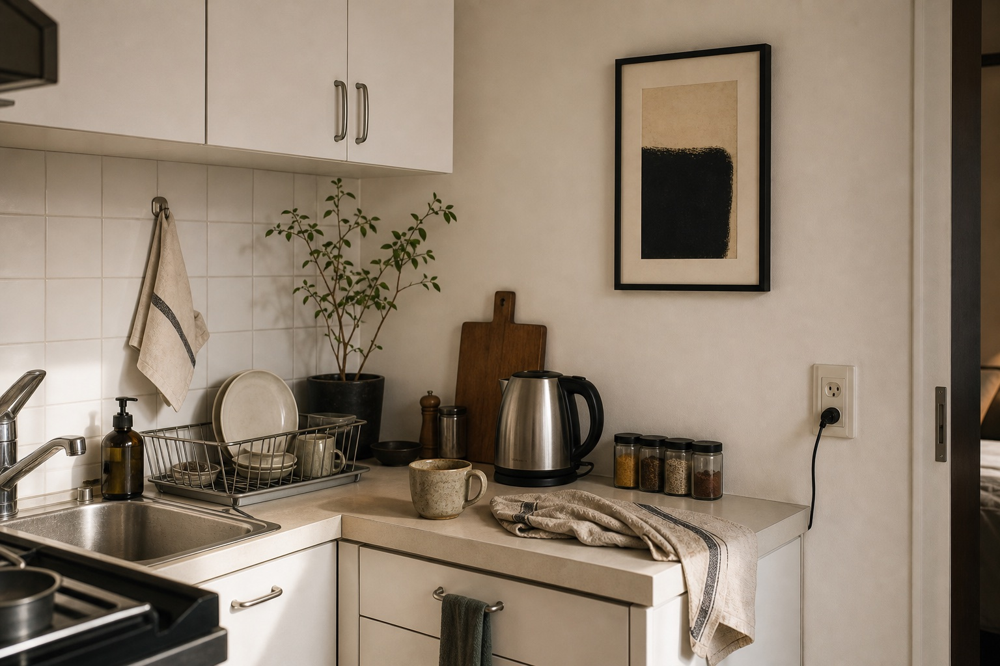
the ordinary counter is the proof.
싱크대와 접시 건조대가 보여야 실제 서비스처럼 느껴진다. 지우는 대신 정리된 시선으로 만든다.
a narrow wall can carry the upgrade.
큰 리모델링 없이도 작은 벽면 하나에 아트가 들어가면 주방의 첫인상이 바뀐다.
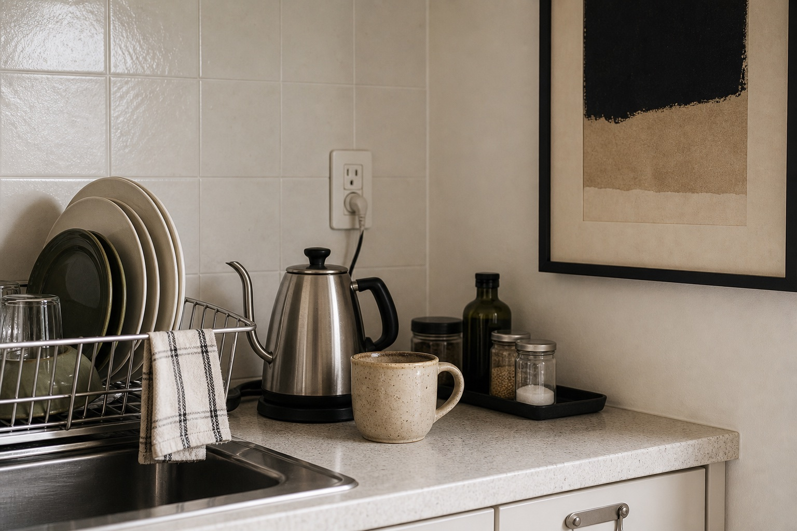
15:00 KST / Mirror Essay 07 / Ready
Real Bath, Private Gallery
샤넬의 사적인 주소감과 Dior Maison의 생활 오브제 문법을 작은 렌탈 욕실에 적용한다. 타일, 수건, 세면대, 스위치, 병을 숨기지 않고 거울 옆 아트와 낮은 조도로 “내 욕실도 명품처럼 편집될 수 있다”는 기대감을 만든다.
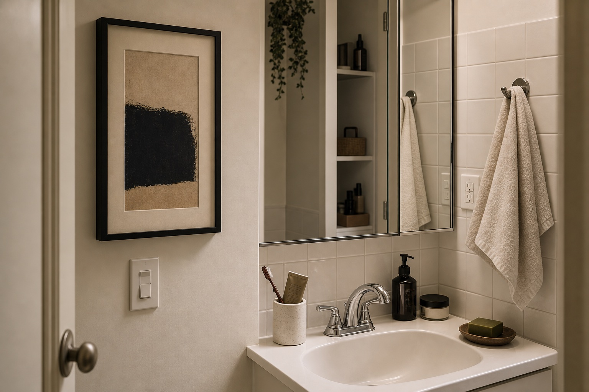
proof makes the promise believable.
수건과 스위치가 보여야 사용자는 “우리 집도 가능하다”고 느낀다. 럭셔리는 공간이 아니라 시선의 편집에서 시작된다.
reflection doubles the artwork.
거울은 좁은 욕실의 두 번째 벽이다. 작은 아트라도 반사와 프레이밍을 쓰면 공간 전체의 밀도가 올라간다.
daily objects become still life.
칫솔, 펌프병, 크림통을 치우지 않는다. 낮은 트레이와 어두운 병으로 생활품을 정물처럼 묶는다.
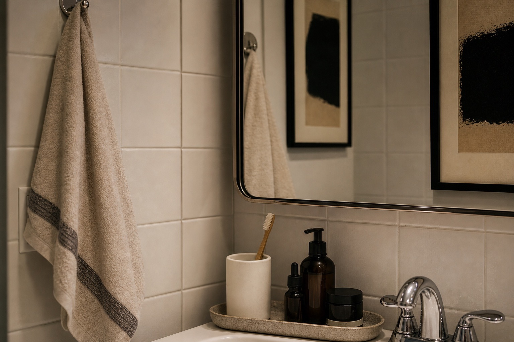
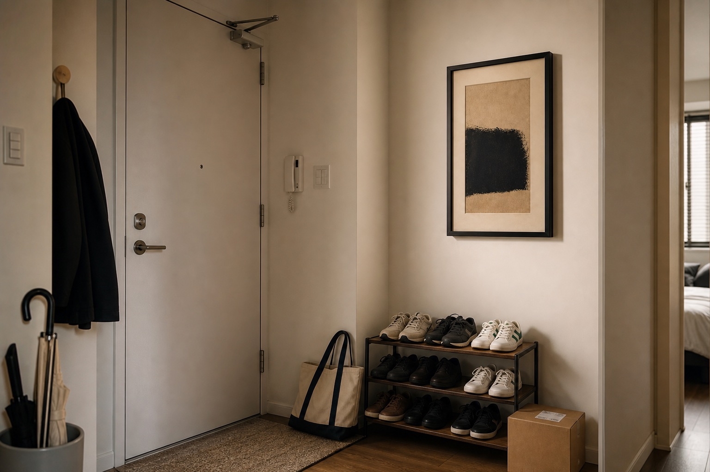
16:00 KST / Entry Zine 08 / Ready
Arrival Becomes a House Code
Louis Vuitton의 여행 오브제와 Fashion Eye식 시선, Chanel의 주소감 문법을 현실적인 현관에 적용한다. 신발장, 우산, 택배 박스, 인터폰을 지우지 않고 아트가 “문을 여는 순간부터 내 집이 명품처럼 시작된다”는 기대감을 만든다.
the entry is the cover.
집의 첫 컷은 거실이 아니라 현관이다. 좁은 벽에 걸린 아트가 사용자의 집 전체를 기대하게 만든다.
tote, umbrella, keys become travel objects.
토트백과 우산은 어수선함이 아니라 이동의 흔적이다. 여행 오브제처럼 묶으면 평범한 현관도 컬렉션처럼 보인다.
keep the sneakers visible.
신발장을 숨기면 데모가 된다. 신발을 남겨야 사용자는 자기 집에서 같은 변화를 상상한다.
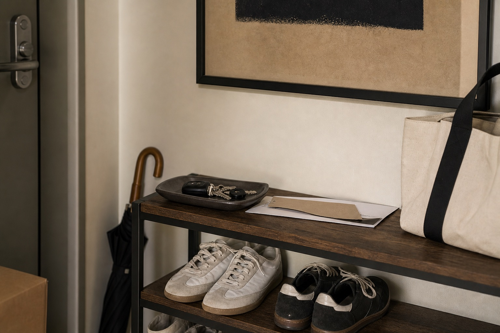
Reference URLs
Louis Vuitton Objets Nomades: https://us.louisvuitton.com/eng-us/magazine/articles/the-objets-nomades-collection
Louis Vuitton Fashion Eye: https://us.louisvuitton.com/eng-us/trunks-travel-and-home/library-and-stationery/fashion-eye/_/N-tiayzr9
31 Cambon: https://www.chanel.com/us/fashion/services/boutique-31-cambon/
17:00 KST / Laundry Zine 09 / Ready
Laundry Light, Textile Still Life
Dior Maison의 textile과 생활 오브제 문법을 세탁 베란다에 적용한다. 세탁기, 건조대, 수건, 세제, 콘센트, 도시 창밖을 숨기지 않고, 아트가 가장 생활적인 코너도 “내 집만의 명품 편집 페이지”로 바뀔 수 있다는 기대를 만든다.
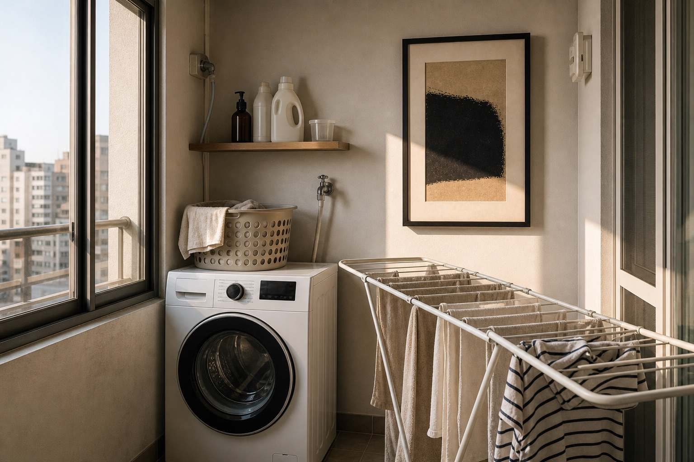
drying towels can be the palette.
수건과 셔츠는 지울 대상이 아니라 집의 색과 질감을 보여주는 직물이다.
detergent becomes a prop, not clutter.
세제와 바구니는 기능품이다. 트레이와 선반, 아트 옆 배치로 생활 오브제처럼 묶는다.
the city view turns the corner into an essay.
창밖의 아파트 풍경은 현실의 증거다. 그 빛을 이용하면 세탁 코너도 브로슈어의 한 장면이 된다.
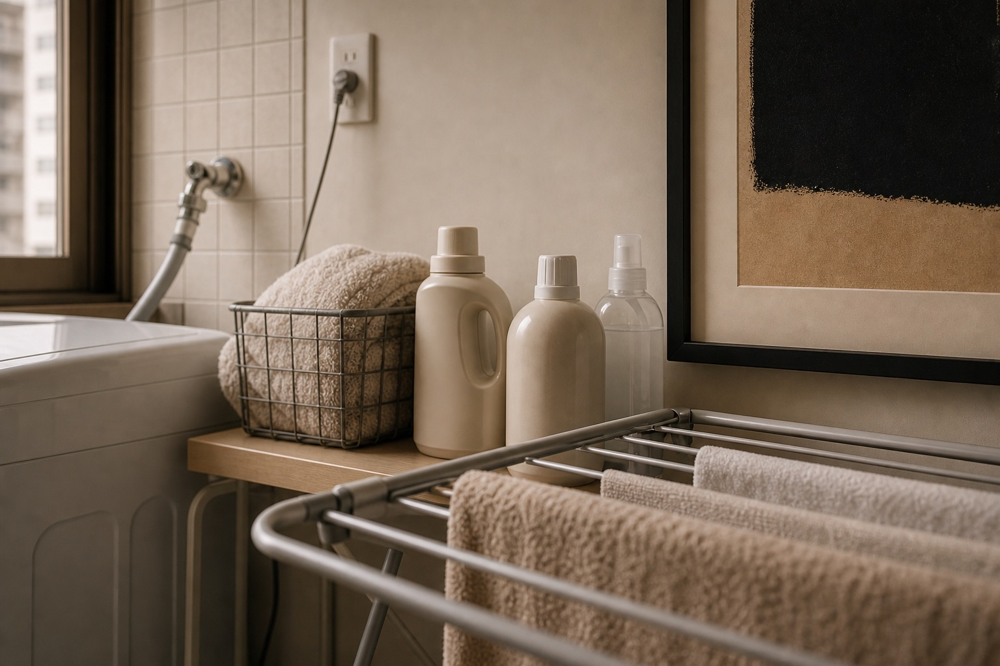
Reference URLs
Dior Maison: https://www.dior.com/en_us/fashion/maison/maison
Dior Salone del Mobile: https://www.dior.com/en_us/fashion/news-fashion-shows/folder-news-and-events/salone-del-mobile
Louis Vuitton Objets Nomades: https://us.louisvuitton.com/eng-us/magazine/articles/the-objets-nomades-collection
Hourly Production Queue / 2026.06.23 KST
오늘은 매시간 실제 페이지를 추가한다
Maison Lookbook
한 집의 네 공간을 art de vivre식 생활 체계로 묶은 룩북.
Cambon Spatial Essay
주소, 거울, 계단, 보존 서비스 문법을 공간 에세이로 번역한 정식 릴리스.
Nomadic Object Zine
소파, 책상, 현관을 바꾸지 않고 액자 위치만으로 기대감을 만드는 정식 릴리스.
Maison Table Lookbook
식탁 겸 책상, 조명, 콘센트, 벽 아트를 하나의 art de vivre 의식으로 묶은 정식 릴리스.
Bedroom Storybook
옷걸이와 충전 케이블이 있는 작은 침실이 아트로 사적인 명품 방처럼 보이는 정식 릴리스.
Kitchen Zine
접시 건조대와 콘센트가 있는 작은 주방을 아트와 크롭으로 명품 잡지 컷처럼 만드는 정식 릴리스.
Bathroom Mirror Essay
타일, 수건, 세면대, 스위치가 있는 작은 욕실을 거울과 아트로 프라이빗 갤러리처럼 만드는 공개 대기본.
Entryway Zine
신발장, 우산, 토트백, 택배 박스가 있는 현실적인 현관을 아트로 집의 첫 명품 장면처럼 만드는 공개 대기본.
Laundry Light Zine
세탁기, 건조대, 세제, 수건이 있는 베란다를 아트와 빛으로 직물 정물처럼 만드는 공개 대기본.